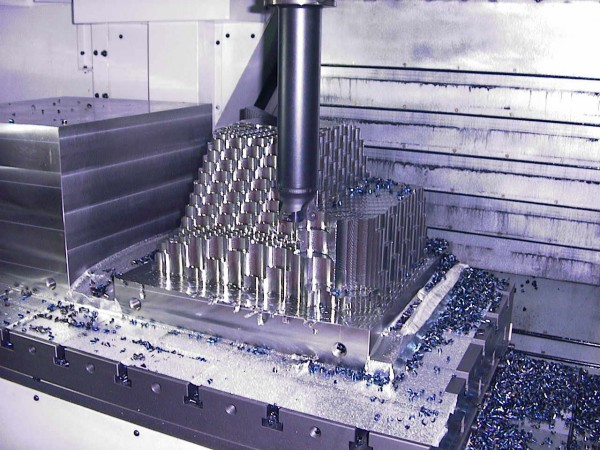

|
2.7.
Mitralyöz Kesme Metodu
Kalýp
imalatçýsý kalýbý solid bir çelik bloktan baþlayarak iþlediðinde
metalin çoðu talaþa dönüþür. Kaba iþleme süresi uzundur. Modern
kalýp tezgahlarý yüksek eksen hýzlarý kullanarak bu süreyi
kýsaltmýþtýr. Bu arada süreyi daha da azaltmak için yeni metotlar
geliþtirilmiþtir.
Kontur
iþleme sýrasýnda kesici takýmýn metali kestiði yay boyu uzundur
ve ortaya çýkan büyük kesme kuvvetleri titreþime sebep olduðundan
tezgahýn tüm gücünden ve torkundan istifade edilemez, kaba
iþleme süresi uzar.
Birkaç
yýl önce buna bir çare olarak dalma iþleme (plunge-cutting)
metodu ileriye çýktý ve kaba iþleme süresi oldukça azaldý.
Ancak bu metodun üç önemli mahzuru vardý; a) Programlanmasýnda
güçlükler vardý, b) her cins kalýp þekline uygulanamýyordu,
c) kaba iþlemeden sonra kalan yüzey oyuklarý kalýntýlarýnýn
giderilmesi çok güç ve zaman alýcýydý.

Þekil-3
PLUNGE CUTTING - DALMA ÝÞLEME METODU;
(PARÇANIN KABA ÝÞLEME SONRASINDAKÝ GÖRÜNÜÞÜ)
KOMPLE KABA + FÝNÝÞ ÝÞLEME SÜRESÝ: 9 SAAT, Kaynak: OKUMA Corp.,
Japonya
Daha
sonra yakýn yýllarda geliþtirilen "mitralyöz kesme metodu",
ismini kýsa ve kalýn talaþ parçalarýnýn bir makineli tüfekten
(Fransýzcasý: Mitrailleuse) atýlýrcasýna kesici takým tarafýndan
atýlmasýndan alýr. Mitralyöz kesmede takým dalmasý az fakat
takým ilerlemesi yüksektir. Örneðin, Kesme derinliði = ap
= 1 mm; diþ baþýna ilerleme = fz = 1,8 mm.
Þekil-4
MACHINE
GUN CUTTING - MÝTRALYÖZ KESME METODU
(PARÇANIN KABA ÝÞLEME SONRASINDAKÝ GÖRÜNÜÞÜ)
KOMPLE KABA + FÝNÝÞ ÝÞLEME SÜRESÝ: 2 SAAT 42 DAKÝKA, Kaynak:
OKUMA Corp., Japonya
Bilinen
CAM sistemleri takým yolunu kolayca hesaplar. Takma uçlu takýmlar
kullanýlýr. Bu metodun sýrrý diþ baþýna ilerlemenin çok yüksek
olmasýdýr. Kesme derinliði az olduðundan takýma radyal istikamette
tesir eden kuvvet düþük ve aksiyal istikamette büyüktür. Bu
husus titreþimi ve takým defleksiyonunu azaltýr.
Þekil-5
MÝTRALYÖZ KESME TAKIMI
Çap = 63 mm, Boy = 250 mm, L/d = 4, Kaba talaþ debisi: 500
Cm3/Dakika, Kaynak: OKUMA Corp., Japonya
Sonuç:
Takým
tezgahlarý modern teknolojik ilerlemelerin sunduðu imkanlardan
en iyi þekilde faydalanmaktadýr. Bilgisayarlar ile yapýlan
hesaplamalar, tasarýmlar, uygulamalar ve sonuçlarýn ölçülmesi
mühendislere kesme teknolojilerini daha iyi anlama, yorumlama
ve tedbir alma imkaný saðlamaktadýr.
Takým
tezgahý imalatçýsý Firmalar büyük montanlý Ar-Ge çalýþmalarýný
finanse etmeye devam ediyorlar. Müþterilerden gelen talepler
bu çalýþmalara yön veriyor.
Tüm
dünyada gördüðümüz bu geliþmelerin en büyük faydasý da müþterilerin
kullanýlmasý kolay ve hassas tezgahlarda mükemmele yakýn kalýplarý
daha kýsa zamanda ve daha ucuza üretebilmeleri, böylece global
rekabet yarýþýnda geri saflara düþmekten kendilerini korumalarýdýr.
Not:
Yazarýn verdiði bazý seminer notlarýný da içeren bu yazýnýn
ilk versiyonu Makine Ýhtisas Dergisi Þubat 2006 Sayýsý'nda yayýnlanmýþtýr.
|